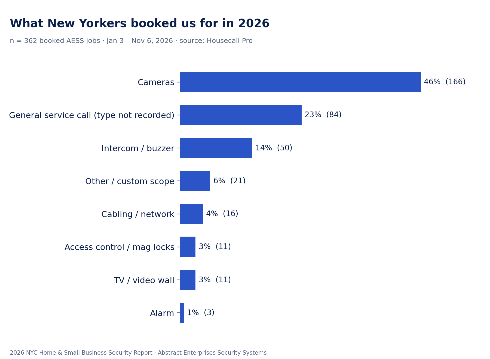
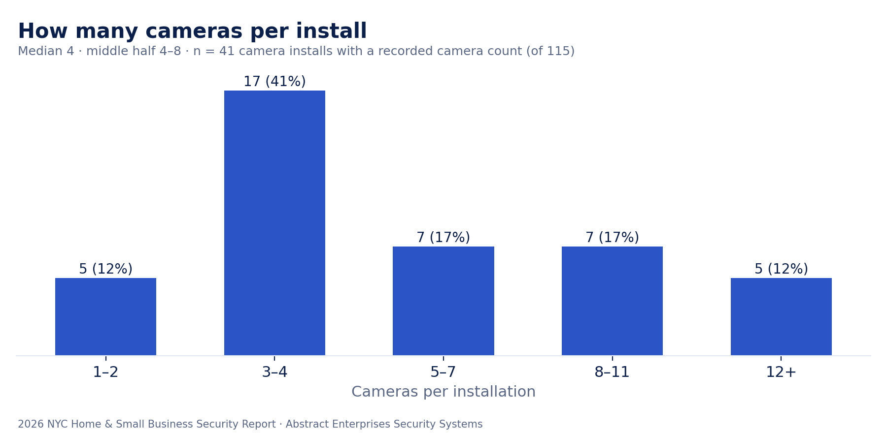
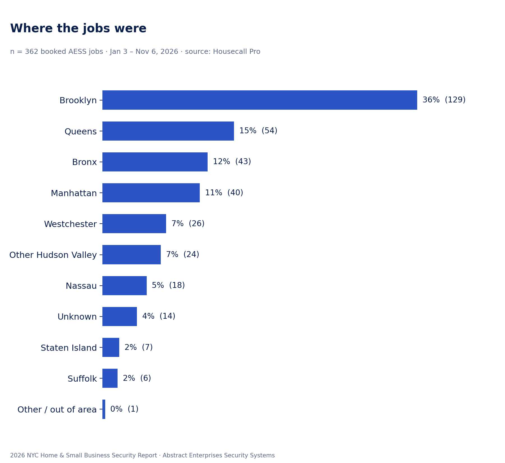
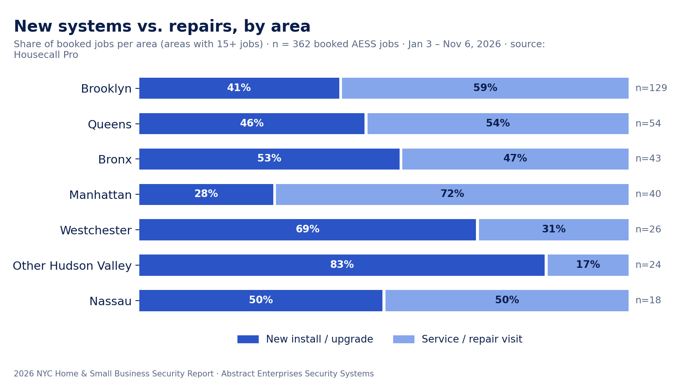
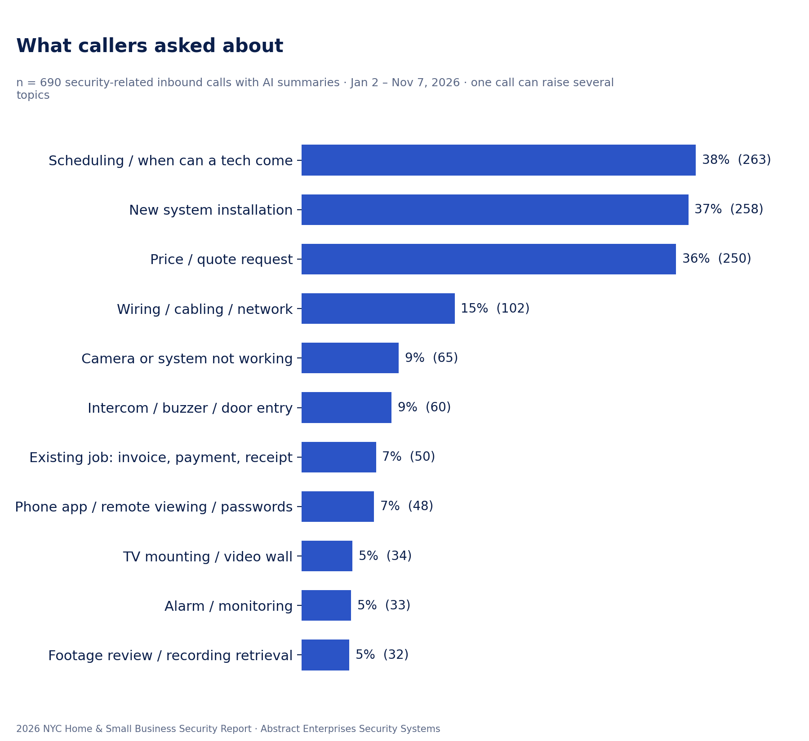
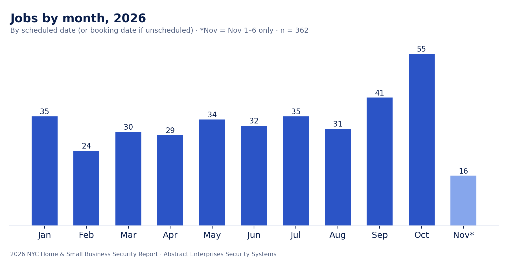

By Abstract Enterprises Security Systems — licensed NYS low-voltage contractor, in security since 2000 · Published 2026-11-07 · PDF version
Most "security trends" articles are written from surveys or manufacturer press releases. This one comes from work orders. We pulled every job Abstract Enterprises Security Systems booked between January 3 and November 6, 2026 — 362 jobs across the five boroughs, Long Island, Westchester and the Hudson Valley — plus 690 security-related calls to our phone line, and counted what New Yorkers actually paid to have installed, fixed and explained.
Every figure below states its sample size and date range. Nothing identifies a customer: no names, addresses or individual invoice amounts appear anywhere in this report.
Job data. We exported every job created in our field-service system (Housecall Pro) from January 1 to November 6, 2026 — 589 job records — and kept the 362 that were actually booked: on the schedule or paid, not canceled, and not a blank placeholder. Each job was classified by service from its job title and invoice line items (camera, intercom/buzzer, access control/mag lock, alarm, cabling/network, TV/video wall). Generic "service call" tickets with no detail recorded were kept as their own group rather than guessed. Jobs were mapped to an area by the ZIP code of the service address. We marked a job as a repair when its title or line items describe a service call, diagnostic, repair, warranty visit or reset; everything else counts as a new install or upgrade.
Price ranges. Ranges are the middle half (25th to 75th percentile) of job totals for each service, including sales tax and any add-ons, rounded to the nearest $10 or $50. We only report a range when there are at least 10 jobs behind it. No single job amount is published.
Call data. Our phone line is answered by an AI receptionist that writes a short summary of each call. We exported all 3,658 inbound calls from January 1 to November 7, 2026. Of those, 1,663 had a usable summary; after removing personal calls, vendor and marketing pitches and crew coordination, 690 security-related customer calls remained. We counted how many mentioned each topic. One call can raise several topics, so percentages add up to more than 100%.
Limits. This is one company's data, not a citywide census. Our mix reflects where we market and the services we offer. Residential versus commercial status was only marked when a business or building name was on the account (28% of jobs, 103 of 362); the other 72% are mostly households but are left unclassified. Camera counts were only recorded on 41 of 115 new camera installs. Data that was too thin — alarm jobs (3), hacked-recorder calls (2) — is noted but not analyzed.

Cameras dominate: 46% of all booked jobs (166 of 362, Jan 3 – Nov 6, 2026). Of those camera jobs, 115 were new systems or add-ons and 51 were repairs.
Intercoms and door buzzers came next at 14% (50 jobs), followed by structured cabling and network drops (4%, 16 jobs), access control and mag locks (3%, 11 jobs) and TV mounting and video walls (3%, 11 jobs). Another 23% (84 jobs) were general service calls where the type wasn't written on the ticket, and 6% (21 jobs) were custom scopes of work that didn't fit one category.
How big are camera systems? Among the 41 camera installs where we could read the camera count from the job, the median system had 4 cameras, and the middle half had 4 to 8. Four-camera packages were the single most common size (15 of 41). Larger systems are not rare: 12 of the 41 (29%) had 8 cameras or more, and the biggest jobs — multi-family buildings, warehouses and commercial spaces — ran from 12 to 26 cameras.

What does it cost? These are the middle-half ranges of what jobs actually totaled, including tax and add-ons:
| Service | Jobs | Middle half of job totals |
|---|---|---|
| New camera system or add-on | 115 | $1,250 – $2,650 |
| Camera service / repair visit | 49 | $160 – $260 |
| Intercom / buzzer repair visit | 32 | $270 – $420 |
| New intercom system | 18 | $680 – $5,150 |
| New cabling / network drops | 12 | $460 – $2,050 |
| TV mounting / video wall | 11 | $330 – $810 |
The intercom range is wide on purpose: it covers everything from replacing one apartment's indoor station to a full building entry system with keypads and fobs.

Brooklyn produced 36% of all booked jobs (129 of 362). Queens followed with 15% (54), the Bronx with 12% (43) and Manhattan with 11% (40). Staten Island was 2% (7). Together the five boroughs accounted for 75% of the work.
Outside the city, Westchester was 7% (26 jobs), the rest of the Hudson Valley — Rockland, Orange, Putnam, Dutchess and Ulster — was 7% (24), Nassau 5% (18) and Suffolk 2% (6). About 4% of jobs (14) had no ZIP on file.

Across all 362 jobs, the split was almost exactly even: 180 service or repair visits (50%) and 182 new installs or upgrades (50%).
The split changes sharply with geography:
By service, intercom and buzzer work had the highest repair share (64%, 32 of 50), while cameras were mostly new installs (69% new, 115 of 166).
Most common repair reasons. Of the 106 repair visits where the reason was written down (Jan–Nov 2026), the leading causes were: a camera down or not showing a picture (40, including 9 wireless-camera repairs), an intercom, buzzer or door-release fault (31), a recorder (DVR/NVR) diagnosis or hard-drive replacement (9), and door hardware such as a strike, push bar or mag lock (6).

Out of 690 security-related calls (Jan 2 – Nov 7, 2026):
The pattern is clear: people call when they want something done soon. Speed and a clear price matter as much as the equipment.

Jobs by month (n = 362; by scheduled date, or booking date if not yet scheduled): January 35, February 24, March 30, April 29, May 34, June 32, July 35, August 31, September 41, October 55, and November 16 (November 1–6 only).
Work was steady at roughly 30 to 35 jobs a month from spring through summer, dipped in February, and climbed in the fall. October was the busiest month of the year. Part of that jump may reflect fuller record-keeping as the year went on. Shorter days and the run-up to the holidays are a likely reason more people book in the fall.
Homeowners. A four-camera system is the norm, and it covers most front doors, driveways and backyards. Before you call, know where you want coverage and how long you want recordings kept — and decide whether you want the cables hidden in the walls or neatly run on the surface, because that is the single biggest question installers will ask. If you already have a system, keep the app login and recorder password somewhere safe: forgotten passwords and phone-app setup were 7% of all calls.
Building owners and managers. Buzzers and intercoms fail far more often than they get replaced — 64% of intercom jobs were repairs. If your building has an older audio system and you are paying for the same door-release fix more than once a year, price out a replacement. When a repair is booked, plan for access to every affected unit on the same visit so the problem can be traced in one trip.
Small businesses. Accounts with a business or building name made up 28% of our jobs. Businesses tend to need more cameras than homes, a recorder that keeps footage longer, and sometimes access control on a back or side door. Don't wait for an incident: 5% of callers were trying to recover footage after the fact, and footage you didn't record can't be recovered.
Everyone. Fall is our busiest season. If you want work done before the holidays, book in September rather than late October.
Abstract Enterprises Security Systems has installed and repaired security systems across NYC, Long Island and the Hudson Valley since 2002.
Get a price from Abstract Enterprises Security SystemsOr call/text (800) 486-0943 · Download the PDF report
Abstract Enterprises Security Systems, Inc. is a licensed New York State low-voltage contractor. Owner Anwar Timothy has worked in security since 2000 and has run the company since 2002 — more than 25 years. Abstract Enterprises Security Systems installs and repairs security cameras, intercoms and door buzzers, access control and mag locks, alarms, structured cabling and Wi-Fi, TV mounting, video walls and outdoor LED screens across all five NYC boroughs, Nassau, Suffolk, Westchester, Rockland, Orange, Putnam, Dutchess and Ulster. Hours are 8 AM to 8 PM, seven days a week.
Get a price or book a visit at abstractenterprisessecuritysystems.com or call (800) 486-0943.
Data sources: Abstract Enterprises Security Systems Housecall Pro job and invoice records (589 job records created Jan 1 – Nov 6, 2026, of which 362 booked; 506 invoices) and Abstract Enterprises Security Systems phone-line call summaries (3,658 inbound calls, Jan 1 – Nov 7, 2026). Aggregated by Abstract Enterprises Security Systems on November 7, 2026. Citation: "2026 NYC Home & Small Business Security Report," Abstract Enterprises Security Systems, November 2026.